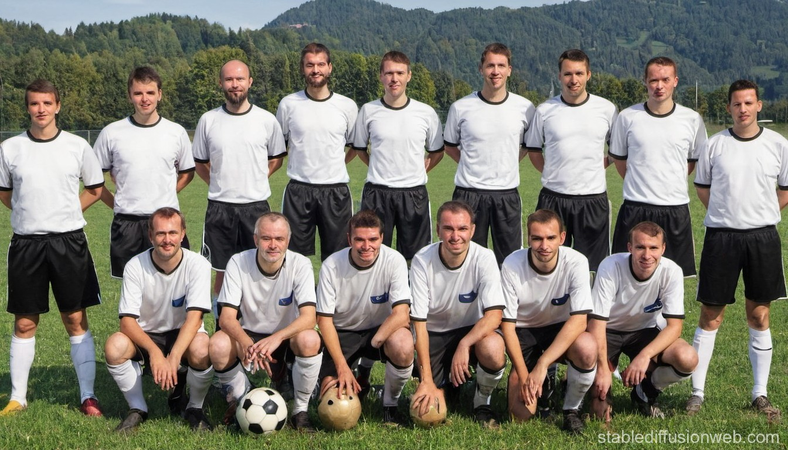
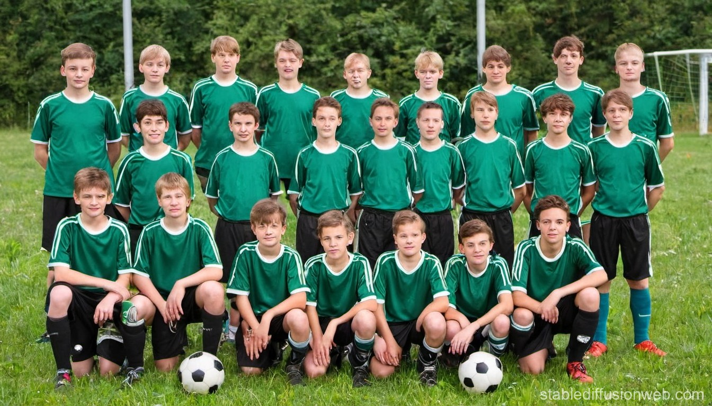

Unsere Teams
1. Mannschaft
1. Mannschaft
Die 1. Mannschaft ist das Aushängeschild des Vereins und spielt in der höchsten Spielklasse der Liga. Das Team besteht aus erfahrenen Spielern, die auf jahrelange Profierfahrung zurückblicken können, sowie aufstrebenden Talenten, die den Kader ergänzen. Unter der Leitung des Cheftrainers wird ein attraktiver und offensiver Spielstil gepflegt, der die Fans begeistert.
Aktuelle Saison
In der laufenden Saison 2023/24 belegt die 1. Mannschaft nach 25 Spieltagen einen Platz im oberen Tabellendrittel. Mit bislang 15 Siegen, 6 Unentschieden und 4 Niederlagen hat das Team 51 Punkte gesammelt und damit gute Chancen, sich für den internationalen Wettbewerb zu qualifizieren. Torjäger Max Müller führt mit 18 Treffern die Torschützenliste der Liga an.
Erfolge
In den letzten Jahren konnte die 1. Mannschaft einige beachtliche Erfolge feiern. Dazu gehören:
- Meistertitel in der Saison 2020/21
- Gewinn des nationalen Pokalwettbewerbs in der Saison 2021/22
- Teilnahme an der UEFA Champions League in den Spielzeiten 2022/23 und 2023/24
Mit dieser Mischung aus Erfahrung, Talent und Erfolgen ist die 1. Mannschaft fester Bestandteil der Spitzengruppe der Liga und genießt große Anerkennung bei den Fans.
2. Mannschaft

Beschreibung der 2. Mannschaft, aktuelle Saisoninformationen und Erfolge.
Jugendmannschaft
Beschreibung der Jugendmannschaft, aktuelle Saisoninformationen und Erfolge.